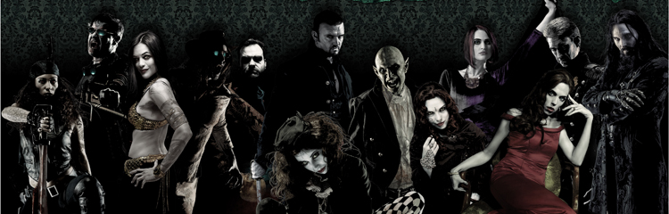

Todos los clanes, excepto los cinco independientes y un puñado de
líneas de sangre, y algunos vástagos que reniegan de la Yihad y de
las sociedad vampírica, pertenecen a una secta. Cada secta tiene sus
propias ideas, objetivos y punto de vista diferente respecto a la
forma adecuada de interacción con los humanos y de la mejor forma de
mantener la supervivencia de la Estirpe (forma por la que se llaman
a sí mismos como un todo).
Hay dos sectas principales: la Camarilla, y el Sabbat. La primera
piensa que lo mejor es mezclarse con los humanos para que no noten
su existencia y así poder controlarlos desde las sombras, mientras
el Sabbat piensa que deben revelarse en su naturaleza depredadora y
subyugar a la humanidad y gobernarla como el impotente y débil
ganado que ellos dicen que es.
Luego hay otras distinciones menores, entre ellas los anarquistas,
que a pesar de compartir parte de los ideales de humanidad y
ocultación de la Camarilla, no aceptan que otro vampiro les de
órdenes y los gobierne solo por ser más antiguo, ni que los maten
por violar leyes que ellos no aceptan. A los vampiros que pertenecen
a una secta que no es la misma a la que pertenece el resto del clan
se los denomina “antitribu”. Normalmente se trata de miembros de
clanes de la Camarilla que se pasan al Sabbat, pero hay excepciones
como el caso de los Lasombra.
En lo que se refiere a quienes se han separado del resto del clan
sin unirse a otra secta, no se suele usar este término. Algunos que
normalmente se llamarían antitribu han llegado al punto de
considerarse una línea de sangre, como las Serpientes de la Luz, un
grupo de Seguidores de Set que se unieron al Sabbat. El término se
originó durante la Revuelta Anarquista, cuando los jóvenes
anarquistas renunciaron a sus clanes y se volvieron contra sus
antiguos.
Otro grupo es el Inconnu, un grupo misterioso formado por vástagos
que al estar cansados de los actos de los más antiguos y más jóvenes
vampiros, y también de la yihad tratan de mantenerse al margen de
los demás llevando así a diversas conclusiones: Se mantienen en
letargo para poder estar fácilmente apartados de los demás, Algunos
creen que solo son vampiros tratando de alcanzar la Golconda, Y
otros simplemente los confunden con los Antediluvianos. La segunda
es la opción más plausible, y la tercera es imposible, pues los
Antediluvianos no se relacionan entre sí. En los múltiples
suplementos que conforman la metatrama de Vampiro, en ningún momento
se explica que es realmente el Inconnu.
Los vástagos se distinguen en 13 clanes establecidos que se transmiten de un sire a su chiquillo y que empezaron en los vampiros de 3.ª generación, los llamados antediluvianos. Cada vástago fue abrazado por un sire de acuerdo a las características del clan de su Sire, de esta forma una persona rebelde y pendenciera jamás sería abrazada por un vampiro del aristocrático clan Ventrue, sino por un Brujah, ni un ejecutivo rico y delicado sería abrazado por uno de estos, sino por un Ventrue. De todas formas esto no es algo tan estricto, normalmente eligiéndose a alguien de acuerdo al vampiro. Algunos carecen de clan, son los llamados Caitiff
Las Sectas
Camarilla
Brujah
Este clan está formado en gran parte por rebeldes, con y sin causa.
Individualistas, locuaces y turbulentos, los Brujah, sienten mucho
afecto por la idea del cambio social y en sus filas albergan a
algunos de los más violentos vampiros de la Camarilla. Los demás
Vástagos los perciben en su mayoría como poco más que gentuza
protestona, pero la verdad es que en sus polémicas hay una pasión
genuina. Los Brujah apoyan con gritos y sentido corrosivo. Algunos
siguen a miembros carismáticos del clan, mientras que otros
prefieren posiciones de ostentoso y desafiante individualismo. El
clan presume de una historia rica en guerreros poetas, y ha adaptado
este concepto a la noche moderna; muchos Brujah están encantados de
tener una oportunidad de expresar su opinión y después entregarse a
un arranque destructivo para ilustrar sus puntos de vista. El apoyo
de la Chusma al cambio mantiene al clan unido, aunque tenuemente, en
sus cruzadas cotidianas. Ante un enemigo común, Brujah con ideas muy
distintas unirán sus fuerzas. Sin embargo, cuando el enemigo haya
sido derrotado volverán a sus asuntos de la forma habitual. Un tema
común entre ellos es la fundación de una "Utopía" vampírica o la
recreación de una del pasado remoto, aunque cada miembro del clan
tiene una idea distinta sobre cómo es dicha Utopía.
Los Brujah confían en el comportamiento caótico y la insurrección
para sacar adelante sus ideas, y se les permite cierta libertad de
acción de la que carecen otros clanes. De hecho, casi se espera de
ellos que sean incoherentes y belicosos; este estereotipo actúa en
beneficio de muchos elocuentes miembros del clan, que no necesitan
recurrir a la violencia para respaldar sus argumentos. Respetados
por su marcialidad y su disposición a unirse bajo una bandera, los
Brujah son la fuerza física de la Camarilla. Sin embargo,
últimamente muchos neonatos de la Chusma ven su papel en la secta
como una institución en sí mismo, lo que ha provocado cierta
incomodidad en el clan. Otros Vástagos creen que serían los primeros
en abandonar la Camarilla. Los Brujah también lo creen... Los Brujah
pueden tener aspectos muy distintos, aunque por lo general adoptan
estilos radicales y de aire rebelde. De acuerdo con los estereotipos
más despectivos, el Brujah típico lleva cazadora de motorista,
vaqueros gastados, botas militares y un imponente peinado, pero la
verdad es que pocos encajan con esta imagen. Los peinados llamativos
y la ropa juvenil son populares entre muchos miembros del clan, pero
otros prefieren ropas elegantes que les ayuden a ser tomados en
serio.. A fin de cuentas, la apariencia de un Brujah suele revelar
sus actitudes.
Un skinhead bravucón será probablemente un rebelde o un anarquista,
mientras que un pedante con gafas y traje de tweed será un
reformista o un liberal. No obstante, conviene tener en cuenta que,
dada la propensión de los Brujah al incornformismo, cualquier
suposición basada en la apariencia puede ser potencialmente
peligrosa. La Chusma tiene el aspecto que quiere. El clan prefiere a
los que defienden el cambio de una u otra forma, y suele reclutar a
sus miembros en campues universitarios, grupos políticos o minorías
oprimidas. Los jóvenes Brujah pueden tener cualquier procedencia, y
suelen defender alguna causa personal de gran importancia para
ellos. Todo tipo de disidentes encuentran un lugar en el clan, desde
anarquistas moteros aficionados a las bombas hasta fascistas
vociferantes, pasando por radicales nihilistas. Lógicamente, esto es
en parte la causa de que el clan esté tan desorganizado: el odio
entre los Brujah puede ser más amargo que el que sienten contra sus
enemigos comunes.
Gangrel
El clan gangrel destaca por su afinidad con la naturaleza y por su escaso contacto con el resto de los Cainitas. Así, los gangrel prefieren pasar noches enteras en comunión con animales, o dedicados al frenesí de la caza. Esta afinidad se extiende a su Bestia interior, provocando que, después de haber entrado en frenesí, aparezcan rasgos animales en su cuerpo, representando la huella que deja la Bestia en su cuerpo. Estos rasgos pueden ser de cualquier clase: desde alas, hasta modificaciones en la estructura ósea, pasando por corazas de quitina similar a la de los insectos. Su símbolo es una cabeza de lobo aullando. La mayoría de los gangrel son solitarios, burlando, o simplemente ignorando las normas sociales. Este carácter distante, junto con su ferocidad durante el combate, ha creado un aura de temor y misterio alrededor del clan. Su enemistad con el clan Ravnos tiene que ver con los primeros tiempos y el enfrentamiento entre los antediluvianos gangrel y ravnos (que son hermanos gemelos según la tradición). Por último, se rumorea que los gangrel poseen una afinidad especial con los Lupinos, nada más lejos de la verdad puesto que son su principal problema.
Malkavian
El clan Malkavian es uno de los trece clanes originarios de la
Segunda Ciudad. Cada miembro del clan Malkavian está afectado por
una terrible locura que se manifiesta de forma diversa, lo que ha
hecho que estos Vástagos sean temidos por el resto de los vampiros,
aunque en ocasiones también han sido valorados por sus enigmáticas
visiones y profecías. Aunque generalmente se encuentran divididos y
desorganizados, en ocasiones manifiestan extraños comportamientos y
unifican sus esfuerzos, lo que ha ocurrido en momentos puntuales a
lo largo de la historia. El símbolo Malkavian es un espejo de mano
roto. Tras la caída de la Segunda Ciudad y la desaparición de su
fundador, los Malkavian se esparcieron por todo el mundo, infectando
a la sociedad con sus perspectivas alteradas y su locura. Muchos
acudieron a Roma, donde colaboraron con los Ventrue y otros clanes
en la destrucción de Cartago. Algunos vástagos creen que la locura
de los Malkavian desestabilizó las instituciones y llevó a la caída
del Imperio Romano. Durante la Edad Media fueron en general
rechazados y considerados un Bajo Clan.
Cuando estalló
la Revuelta Anarquista un grupo mayoritario de ellos, dirigidos por
el sabio hindú Unmada, se presentaron a los Fundadores de la
Camarilla y se unieron a la secta. Vasantasena, una chiquilla de
Unmada, se unió con los rebeldes del Sabbat. Para poder formar parte
de la Camarilla, los Malkavian "atenuaron" los poderes que
provocaban locura. En una reunión que atrajo a poderosos antiguos y
Matusalenes del clan, realizada en Domalize en 1497, los Malkavian
"cerraron" en parte sus mentes, salvo una minoría que se resistió a
la transformación y se convertirían en los antitribu Malkavian del
Sabbat. A finales del siglo XX estos antitribu Malkavian
"infectaron" al resto de sus congéneres con la terrible locura que
padecían antaño, devolviéndoles los poderes que habían reprimido.
Este cambio podría estar relacionado con la llegada de la Gehenna.
Nosferatu
El clan nosferatu ha heredado la maldición de su fundador, y todos
muestran un aspecto horrible y deforme. Rechazados por los demás
vampiros, e incapacitados para mostrarse abiertamente ante los
mortales, durante milenios, se han mantenido apartados, ocultándose
en alcantarillas, catacumbas y túneles subterráneos. Su símbolo es
una máscara deformada con un gesto de horror. El clan se origina en
las calles de la Primera Ciudad, Enoch, con su antediluviano,
Absimiliard, un poderoso y presumido cazador de gran destreza. Este
atrajo la atención de un vampiro de segunda generación que lo
deseaba como presa y que lo «abrazó» rápidamente, pero con una
pequeña cicatriz en la cara que hirió su orgullo y le llevó a matar
a su señor y alentar la revolución de los antediluvianos. Llegados
los tiempos de la Segunda Ciudad, Absimiliard, contaba con un
pequeño grupo de vampiros a los que había convertido. Todos ellos
cazadores y fieles, excepto una mujer que huyó. Cuando Caín volvió
para el Juicio, maldijo a todo el clan con la fealdad, incluyendo a
la mujer que había huido. Desde entonces, los descendientes más
antiguos de Absimiliard, los Nictuku, buscan a esta mujer y a sus
descendientes, el clan Nosferatu.
Los Nosferatu
mantienen una fuerte solidaridad entre los miembros de su linaje,
comunicándose constantemente y comerciando con la información que
consiguen. El conocimiento representó una buena defensa en siglos
pasados, pero desde la Revolución Industrial muchos miembros han
desarrollado el potencial del clan, introduciendo su influencia en
distintos ámbitos y extendiendo sus redes de información mediante
los medios tecnológicos. Se dice que la principal función de esta
información es preparar una defensa ante el despertar del
Antediluviano Nosferatu y sus monstruosos hijos, los Nictuku.
Algunos señalan que la leyenda de los Nictuku es un mito creado por
los antiguos del clan para mantener la unidad del linaje y que
realmente oculta una guerra entre los descendientes de uno u otro
Matusalén. No obstante, los acontecimientos de las Noches Finales
parecen indicar que la existencia de los Nictuku es real, y la
desaparición de los miembros del clan en Rusia y otros lugares, así
parece indicarlo.
Toreador
Los Toreador usualmente tienen una obsesión con todo aquello que se relacione con lo artístico y la belleza superficial. Son artistas hedonistas y egoístas. Como es de esperarse, los Toreador consideran a los Nosferatu como los vampiros más desagradables y repulsivos. El sentimiento es mutuo. Su atracción hacia las cosas que consideran bellas es tan grande que se ven en la necesidad de forzarse a sí mismos para no quedar paralizados ante trabajos, obras o demás cosas de gran calidad estética. Se dice que los Toreador son los vampiros que más cerca permanecen del lado sensible y emotivo de los seres humanos. Se cree que su fundador Antediluviano fue una gran artista en la primera ciudad (Enoch) y que su nombre era Arikel, posiblemente, o Ishtar. A pedido de Caín, ella creó un hermoso mural que reflejaba la lucha eterna entre el vampiro y la bestia. El mural, se dice, fue desvelado ante Caín y otro de sus hijos. En su furia ante lo que el mural mostraba, Caín y su hijo se retiraron sin llegar a ver jamás el último panel del mural, que ilustraba lo que la Antediluviana pensaba era la forma de vivir en paz con la bestia. Caín destruyó el mural y le ordenó a su hijo beber toda la sangre de Arikel/Ishtar, maldiciéndola a la vez con la fijación que el futuro clan poseería respecto a la belleza. En el último instante, Caín ordenó a su hijo abrazar a la mujer.
Tremere
La mayor parte de los Tremere son arrogantes, cerrados, inteligentes
y organizados (tanto los individuos como el clan en general). Su
disciplina Taumaturgia, la magia de la sangre, es un conocimiento
que la separa en muchas ramas y rituales, lo que la hace muy variada
y útil en muchas situaciones. Utilizan la sangre como alimento y
como objeto de ritos. Los Tremere poseen capillas, lugares que hacen
a la vez de biblioteca, universidad y fortaleza. Se dice que en
Santiago la capilla del ascenso es una de las más grandes, aunque el
poder del clan está centrado en Viena. Cada Capilla está gobernada
por un Regente. La organización es muy formal y estructurada.
Actualmente están por todo el globo. La mayor parte de los clanes
sienten cierto desprecio hacia este clan a causa de sus comienzos.
En el caso de los Tzimisce su inmenso odio suele llevar a que sus
prisioneros Tremere sufran horribles torturas. Este clan tiene
origen en la Edad Oscura. Antes de convertirse en vampiros eran una
casa de la Orden de Hermes, un grupo de Mago: La Ascensión
(originariamente un grupo de Ars Magica). Cuando la magia empezó a
desaparecer del mundo en la Edad Oscura, los magos se dieron cuenta
de que ya no podrían conservar su posición por mucho tiempo. Debido
a esto un mago llamado Tremere encargó a sus discípulos que buscaran
alguna forma de seguir siendo inmortales. Goratrix y otros antiguos
encontraron la fórmula para la inmortalidad experimentando con
vampiros Tzimisce. Con esto finalmente logró conseguir la
inmortalidad, pero volviéndose él y a sus compañeros en vampiros. Al
ver que su magia había desaparecido como parte de la transformación,
intentaron recrearla en lo que luego se volvería la Taumaturgia. El
clan Tzimisce comenzó una guerra contra los recién creados vampiros.
Estos lograron defenderse mediante su Taumaturgia. Luego de esto
Tremere comenzó a extender a los suyos y a poseer a otros vampiros
para aumentar su poder. El clan Tremere fue perseguido por el resto
de la La Estirpe (Vampiro: la mascarada) y Tremere (el fundador del
clan) decidió que tenía que convertirse en un antediluviano para que
su clan sobreviviera. Se dedicó a buscar a un antediluviano en una
frágil posición, y decidió buscar a Saulot, antediluviano del clan
Salubri. Este estaba durmiendo en letargo, y Tremere aprovechó la
situación para diablerizarlo, volviéndose un vástago de 3ª
generación. Luego comenzó una lucha contra los Salubri, que terminó
con un exterminio casi total de ese clan. Finalmente los Tremere
fueron aceptados, y acabaron ayudando a la formación de la
Camarilla. También se les reconoce como gran logro el ritual que
consiguieron hacer para que el clan Assamita no pudiera tomar la
sangre de otros vampiros. Cita Tremere: "Somos más que vampiros.
Somos el siguiente paso de la evolución. Dirigiremos a los demás si
nos permiten hacerlo, o nos quedaremos solos si es necesario. Pero
sobreviviremos."
Ventrue
Es uno de los trece clanes originarios de la Segunda Ciudad. Siempre se han considerado los líderes naturales de la sociedad vampírica haciendo respetar las Tradiciones y decidiendo el destino de los no muertos. Esta posición les ha otorgado respeto y desprecio. Fueron los principales poderes tras las sombras del Imperio Romano, se unieron a la aristocracia feudal y su apoyo fue determinante para la fundación de la Camarilla. De hecho, la mayoría de los Príncipes de la secta proceden de este clan. En comparación con los otros clanes vampíricos, los Ventrue son especialmente particulares debido a la sangre que beben. De hecho, cualquier Ventrue sólo puede beber la sangre de un tipo específico de mortal, o de los mortales en un tipo específico de circunstancias. Algunos sólo pueden acechar a un grupo étnico determinado, mientras que otros sólo pueden alimentarse de los humanos de una determinada ocupación o incluso religión. Algunos Ventrue sólo pueden encontrar nutrientes de la sangre que transporta características más enrarecidas como la ira, el miedo o la inocencia. Independientemente del tipo de sangre que el Ventrue requiera, otro tipo de sangre será regurgitada. No obstante esto, pueden alimentarse de otros Vástagos sin ninguna restricción. Los Ventrue prefieren ver esta desventaja como una cuestión de gustos refinados. Por supuesto, aún con todo su poder, muchos Ventrue pasan hambre.
Sabbat
Lasombra

La sombra son un clan del juego de rol "Vampiro: La mascarada". El
clan pertenece al Sabbat desde la fundación de la mencionada secta
(creada tras el "Tratado de Thorns" en respuesta a la aparición de
la inmovilista y totalitaria Camarilla), junto con los Tzimisce,
tienen un núcleo muy implicado, leal, de voto y mejor posicionado en
su jerarquía. Son parecidos a los Ventrue en lo que se refiere a su
capacidad de gobierno, aunque difieren notablemente en su forma de
aplicarlo: mientras los "Patricios" de la Camarilla suelen ejercer
su mandato directamente sobre sus dominios y subalternos, los
"Guardianes" prefieren mantenerse en la sombra manejando discreta y
eficazmente los hilos. El clan Lasombra es originario de la cuenca
del Mediterráneo y aunque se ha extendido por todo el mundo sigue
poseyendo sus mayores bases de poder en España, Italia y el norte de
África (donde es conocido como Qabilat Al-Khayal).
Desde el comienzo de la implantación del cristianismo en
la Roma Imperial, los "Magistri" comenzaron a tejer lazos con la
iglesia, pues vieron en ella una gran fuente de poder que sin
embargo era discreta y no llamaba la atención de los Ventrue y los
Malkavian que en aquel entonces se repartían el poder tanto de la
ciudad como del imperio. Esta especial relación con la iglesia
continuó a través de los tiempos (de hecho es sorprendente el
elevado número que existe de Lasombra católicos), y les fue de mucha
ayuda durante los terribles tiempos de la Inquisición. Algunos
antiguos enemigos de los Lasombra murmuran todavía en los salones
del Elíseo que algunos antiguos y poderosos miembros del clan como
por ejemplo el (actualmente fallecido) cardenal Ambrosio Luis De
Monçada usaron a la Inquisición para eliminar discretamente a
poderosos rivales. Algo que sería razonablemente lógico por otra
parte, ya que la forma de operar del Lasombra típico se basa en la
manipulación, la estrategia a largo plazo y la utilización de
cualquier entidad, criatura o persona que demuestre ser una
herramienta útil (y a ser posible fácil de desdeñar una vez haya
cumplido su misión).
Tzimisce
Son intelectuales y reservados. Su actitud es fría y estoica, lo
cual se demuestra en su especial predilección por la tortura y el
sufrimiento tanto ajeno como propio. Muchas veces esto se hace con
fines científicos, con el objetivo de lograr trascender su estado
vampírico, en el proceso llamado Metamorfosis. Este clan es conocido
por su inhumanidad. A diferencia de otros clanes, que ignoran su
humanidad, simplemente la han perdido, siendo incapaces de sentir
cosas como la piedad o el dolor (al menos bajo las formas y
conceptos comunes). Su disciplina, Vicisitud, les permite alterar su
cuerpo y el de otras personas de la forma que les plazca. Lo
aprovechan para fortalecerse a sí mismos convirtiéndose en seres
hermosos, horribles o inhumanos. También para fortalecer a sus
ghouls, y convertirlos en monstruos. Además les permite adoptar
forma de Zulo(o Forma Horrenda para los demás clanes): un ser
deforme y poderoso de 2 metros y medio, con garras y pinchos óseos
que aprovechan para aplastar a sus enemigos. Igualmente, unos pocos
(más numerosos durante la Edad Oscura) son Koldunes, vampiros que
manejan la hechicería llamada Koldunismo, una magia de sangre más
chamánica que por ejemplo la Taumaturgia Tremere, de procedencia
hermética, que es muy posterior a la kolduniana ya que fue diseñada
por los Tremere para suplir la pérdida de su avatar al convertirse
en vampiros, allá por el 1200.
El Antediluviano del
clan, es a menudo referido como «El primer auténtico Sabbat» ya que
en tiempos de la Primera Ciudad abandonó ésta ignorando al perdido
mientras sus hermanos lo gobernaban o torturaban. Él simplemente los
ignoró viendo en ellos únicamente alimento y partió. Fue abrazado
por Enoch casi de forma fortuita. Enoch buscaba la forma de liberar
su bestia, y la soltó sobre un humano, Tzimisce, un hombre con dotes
para la magia (que perdería a raíz de su abrazo, pues un avatar
despertado y la condición de no-muerto son incompatibles). Para
sorpresa de Enoch, Tzimize no enloqueció, sino que soportó su bestia
con cordura. Finalmente Enoch no pudo liberarse de su bestia
interior, pero esto le valió el abrazo a Tzimisce, que demostró
poder exteriorizar su control sobre la bestia manipulando los
cuerpos como reflejo de su control sobre su lado primitivo. En la
edad oscura este clan era el que tenía el comportamiento más
comúnmente asociado a los vampiros: seres malvados que dominan
pueblos enteros desde un castillo en una colina.
En
estos tiempos vivían en los Cárpatos, en constante conflicto con
otros clanes. Finalmente, los recién surgidos Tremere lograron
hacerlos retroceder gracias a sus habilidades mágicas y sus
poderosas Gárgolas. El odio producido por esto y porque hayan usado
a un "voivoda" (alto noble rumano) para volverse vampiros persiste
hasta hoy. Los Neonatos y Ancillae eran obligados a combatir hasta
la muerte por sus sires, Antiguos que solo se lamentaban por épocas
ya pasadas. En este momento el voivoda Lugoj los convocó. Había
encontrado en el centro de los Cárpatos, en territorio lupino, la
flor de fuego de Kupala. Tal como se decía este pudo romper los
vínculos de sangre que tenía con sus sires, después de saltar a
través de las llamas, en un ritual que posteriormente pasaría a
formar parte de los Auctoritas Ritae. La siguiente noche atacaron a
los Antiguos del clan y lograron destruir a la mayoría. Se dice que
poco después destruyeron al propio Tzimisce, pero no se sabe si es
cierto. Lo que pasó realmente es que Tzimisce, enterrado, extendió
una parte de sí mismo a la superficie: la flor de fuego de Kupala.
Ésta fortalecía el vínculo entre los participantes del Auctoritas
Ritae, además de romper los que ya tenían. Para evitar que Lugoj y
sus seguidores lo diablerizaran, les permitió saber su falso
escondite, donde capturó a Lugoj, lo empaló y tomó su aspecto por
medio de Vicisitud, colocó a un doble de sí mismo en el escondite, y
diablerizó a quien supuestamente era él.
Clanes Independientes
Asamita
Los Assamitas son eruditos y guerreros, un clan profundamente
filosófico dedicado a aprender verdades históricas y religiosas y a
salvaguardar un mundo que temen que pueda desequilibrarse fácilmente
por el mal comportamiento de los Vástagos. Históricamente islámico,
con un folclore que afirma que su fundador conoció a Mahoma y
aprendió de él las verdades del universo, el clan es
tradicionalmente muy religioso pero ha sufrido varios cismas y
cambios de opinión popular a lo largo de los siglos, y los miembros
pueden ser de cualquier fe o creencia. que les permita seguir
buscando la justicia y el equilibrio. Muchos Assamitas consideran
que sólo necesitan recordar a sus compañeros vampiros que se porten
bien para ayudar a mantener el equilibrio en el mundo, pero otros,
más radicales, creen que todos los Vástagos no Assamitas son plagas
en la Tierra, y que eliminarlos es la única manera segura. manera de
hacer que el mundo sea seguro.
Al igual que su clan independiente, los Ravnos, los
Assamitas tienen una reputación desagradable entre los otros clanes;
Son considerados bárbaros peligrosos y misteriosos por la mayoría de
los otros vampiros occidentales, y principalmente considerados
importantes como asesinos a sueldo, con una reputación de ser
capaces de llevar a cabo casi cualquier golpe para el que fueron
contratados y un código de honor que no les permitirá para activar o
regalar información sobre quienes compran sus servicios. Por
supuesto, es ilegal en la Camarilla contratar a cualquier Assamita
para deshacerse de cualquier otro Vástago... pero claro, muchas
cosas son ilegales en la Camarilla, y aun así terminan sucediendo de
todos modos.
Giovanni
Son de origen italiano, de Venecia en concreto, y provienen de la
misma familia. Su símbolo es el sello Giovanni, un grabado con la
letra «G» enmarcada en un cuadrado con florituras, posiblemente
renacentista. No sólo constituyen un clan sino una gran familia,
pues todos sus miembros ya formaban parte de la familia Giovanni
antes de ser abrazados (mordidos para ser convertidos en vampiros).
Este estrecho lazo familiar suele llevar a relaciones incestuosas,
pero se suele ignorar. Estos vástagos son leales al clan, pues antes
de ser abrazados pasan por un período de aspirante, en el que son
convertidos en ghouls, y se les da la oportunidad de demostrar su
valía al clan. Los que lo hacen de forma destacable son abrazados.
Los que no pasan de ser aceptables, se mantienen en su estado de
ghoul. En cambio los que fallan o no son leales a la familia, son
castigados con la muerte. Acto seguido se usan los poderes de la
Nigromancia para traerlos de vuelta como wraiths (espíritus o
fantasmas) y se dispone entonces de ellos de la forma que parezca
más adecuada a sus amos. Desde sus comienzos, el clan ha estudiado
la nigromancia, obteniendo un gran poder sobre los muertos. Su poder
se extiende al ámbito de los vivos por medio de su gran influencia
económica y política.
La historia del clan comienza en
el siglo x, cuando Augustus fue abrazado por Cappadocius,
antediluviano del clan Capadocio, en el templo de Erciyes. Al ver
que su sire había perdido la cordura, creyendo haber encontrado la
forma de volverse Dios, llevó a cabo una confabulación cuyos
principales aliados eran los Ventrue, que culminó con la diablerie
de Cappadocius en el siglo xv. Tras esto, se comenzó a exterminar a
los Capadocios y a sus ayudantes de la línea de sangre llamada
Lamia, de hecho el diabolizar al líder de este clan le otorgó el
beso letal a su clan. Desde enctonces se mantuvo tranquilo. Pero
Augustus descubrió los planes de Cappadocius para unir el cielo y la
tierra, aunque también se dio cuenta de que realmente esa era una
manera de unir la tierra con el más allá, derrumbando el manto, y
dejando que los wraiths volvieran al mundo real. Como expertos en
nigromancia podrían contolarlos, aunque con dificultad, pero
necesitaban recolectar millones de almas, de modo que comenzó a
desarrollar planes para esto.
Ravnos
Los Ravnos también forman parte de los escenarios ficiticios concebidos para los juegos ulteriores de Vampiro: la mascarada (Vampiro: Edad Oscura y Vampiro: La Era Victoriana), todos ambientados en el ficticio Mundo de Tinieblas. Contrario a la mayoría de los clanes dentro del juego, los Ravnos no están asociados con ninguno de los dos grandes grupos de clanes: la Camarilla y el Sabbat. De hecho, gran parte de la simbología de los Ravnos se orienta a culturas del Medio Oriente y Asia, y la organización del mismo se centra en la India. En Europa, estos vampiros están asociados con la cultura gitana. Su símbolo moderno es una cruz cuyos brazos están terminados en punta. Incluso en comparación con otros vampiros, los Ravnos son famosos por su falta de honor, e incluso se les tacha de ser pendencieros y compulsivos, ladrones y mentirosos. Su bestia interna tiende más hacia el deseo de romper las reglas de la sociedad. En esencia, su bestia está más cercana al concepto del "pequeño diablo sobre el hombro" que la bestia de los otros vástagos, la cual es más brutal, violenta y sanguinaria. Recientemente el clan Ravnos fue afectado por el despertar de su Antediluviano en la India en julio de 1999. Durante lo que fue conocido la Semana de las Pesadillas, Ravnos luchó contra varios vampiros orientales de gran poder, antes de ser destruido por varias armas nucleares y la exposición a la luz del sol. Al morir Ravnos, gran parte de sus descendientes enloquecieron o resultaron destruidos, salvo unos pocos, en su mayoría los jóvenes del clan.
Seguidores de Set
Este clan es uno de los más despreciados, ya que sus objetivos son indeseables para todos los demás, y sus métodos son la corrupción y la tentación. Es uno de los clanes más extendidos, ya que, aunque todos los desprecian, pocos reparan en ellos y muchos hacen tratos con ellos a cambio de poder, sin darse cuenta de que finalmente el setita (como se les suele decir) les cobrará el favor y probablemente salgan perdiendo, aún sin darse cuenta. Su objetivo como clan es preparar el mundo para la resurrección de Set, su fundador y dios del antiguo Egipto, que se encuentra en letargo, esperando el Gehena, cuando podrá vengarse finalmente de los antediluvianos. Todos los setitas apoyan este objetivo, menos las Serpientes de la Luz, una línea de sangre que se separó de los setitas y se unió al Sabbat. La historia de Set comienza cuando sus padres Geb y Nut son asesinados por Ra, entonces rey de Egipto y padre de Geb y Nut. Su hermano Osiris, padre de Horus, permaneció con Ra, mientras Set se opuso a él y por eso fue expulsado de Egipto. Volvió cuando Osiris era rey de Egipto, y pidió compartir el reino, pues era suyo por derecho, pero se le negó y fue nuevamente exiliado. En su viaje por Asiria fue abrazado por un miembro de la 2.ª generación. Luego conoció a sus hermanos, pero le parecieron seres oscuros y traicioneros y se mantuvo alejado. Durante sus viajes se enteró de que los vástagos de 3ª generación habían destruido a sus sires, y juró vengarse, y algunos creen que en este momento comenzó la Yihad. Para lograr esto necesitaba aliados poderosos, y volvió a Egipto. Allí encontró que su hermano Osiris también había sido abrazado, y combatieron. Set ganó y destruyó a Osiris y sus hijos, Anubis y Horus. Pero la esposa de Osiris, Isis, lo revivió, y convirtió a Horus en la primera momia (ver Momia: La Resurrección). A ésta le siguieron varias peleas más, pero Set siempre fue vencedor. Su poder en Egipto creció y controló a los faraones. Pero Horus condujo a los ejércitos de Libia contra Egipto, y alcanzó la victoria. De nuevo exiliado, decidió que usaría las armas de sus enemigos contra ellos, el engaño y la corrupción. En este momento abrazó a los primeros seguidores, e hizo que Nubia y Siria invadieran Egipto, para recuperar el control. Luego de esto, distrajo la atención de Roma hacia Cartago, pero finalmente Egipto también cayó. Para solucionar esto, causó la corrupción y caída de Roma. Luego de esto, Set entró en un letargo en el que aún se encuentra, pero los seguidores han tenido bastante éxito en controlar vástagos y clanes enteros para su conveniencia. Aún hoy, el clan sigue su legado, controlando a muchos vástagos y mortales, esclavizándolos por medio de favores, deudas y la adicción. Controlan una gran parte de las organizaciones criminales, y es uno de los clanes más extendidos, en número, poder y territorio.
Clanes Extintos
Cappadocian
Este clan provenía de Medio Oriente, y estaba dedicado principalmente a la investigación de los secretos de la muerte. Para ser un clan en general muy pacífico, los Capadocios han sufrido dos grandes purgas internas: 1ª Purga: El fundador llamó a toda su progenie al Monasterio de Erciyes en la capadocia, y tras una serie de preguntas encierra mágicamente a la mayoría del clan en el sin posibilidad de supervivencia. 2ª Purga: Tras la traición de Augustus Giovanni (uno de los chiquillos del fundador) a su sire, este ordena la eliminación de todos los Capadocios que no fueran de la familia Giovanni. Este hecho origina el cambio de nombre del clan. Entre las dos purgas, el fundador llegá al conocimiento que le permitiría diabolizar a Dios, y substituirle en el cielo. Por suerte para todos, su plan no llegó a tener éxito.
Salubri
Este clan provenía del Medio Oriente, y estaba compuesto en origen
de sabios sanadores y de guerreros sagrados. Durante mucho tiempo
los dos linajes Salubri fueron respetados, y su fundador, Saulot,
era considerado un ejemplo de virtud sin mácula. Tras la aparición
de los Baali, los Salubri guerreros y sus aliados del clan Assamita,
fueron diezmados, aunque la mayor parte de las bajas fueron del clan
de los unicornios, quedando la línea de los guerreros sagrados casi
extinta. Durante la Edad Media, el sueño del fundador del clan fue
interrumpido por una cábala de antiguos magos mortales que se habían
convertido recientemente en vampiros. Su líder, un poderoso miembro
fundador de la Orden de Hermes llamado Tremere cometió amaranto
sobre el supuestamente indefenso Saulot, convirtiéndose en un
antediluviano. Los Salubri entonces fueron objeto de una doble
persecución por parte de los miembros del recién creado clan
Tremere.
De una parte eran difamados como ladrones de
almas, y por otra eran cazados como vulgares ratas. En pocas décadas
los Salubri descubrieron que apenas tenían aliados, y lo que es
peor, que nadie iba a llorar la desaparición de su clan. En la
actualidad solo existen al mismo tiempo siete miembros del linaje
principal. Se rumorea que estos se afanan en la búsqueda de la
Golconda, y una vez lograda engendran un chiquillo para que este
comenta amaranto sobre él, y así ascender a los cielos mientras el
chiquillo gana poder para enfrentarse a un mundo en su contra. Sin
embargo es posible que quede algún Salubri en el Lejano Oriente,
donde dicen que moró durante mucho años Saulot, y donde es posible
que los Tremere no hayan podido llegar. Por otro lado, el linaje
guerrero que se creía perdido, ha reaparecido con fuerza en lo que
se ha denominado la Antitribu Salubri (lo cual es algo irónico pues
son mayores en número que el supuesto linaje principal). Los Salubri
Antitribu son fieles guerreros del Sabbat, y profesan un odio eterno
al clan Tremere.